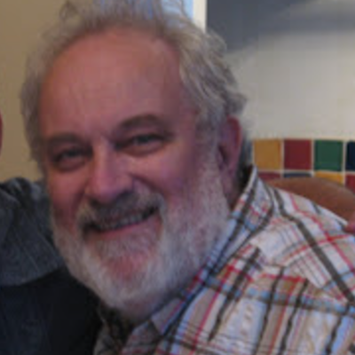

People and Mathematics
Had she lived, she might have been one of this journal's contributors — and she remains, in every sense, a proud citizen of the world of mathematics.

A great mathematics educator; a supportive, thoughtful, talkative supervisor; and, above all, a unique human being.
— The Editors
اگر زنده بود، شاید یکی از نویسندگانِ این مجله میشد — و او، به هر معنا، شهروندی سربلند از جهانِ ریاضیات است.
آموزگارِ بزرگِ ریاضی؛ استادِ راهنمایی پشتیبان، ژرفاندیش و خوشصحبت؛ و بیش از همه، انسانی بیهمتا.
— سردبیران